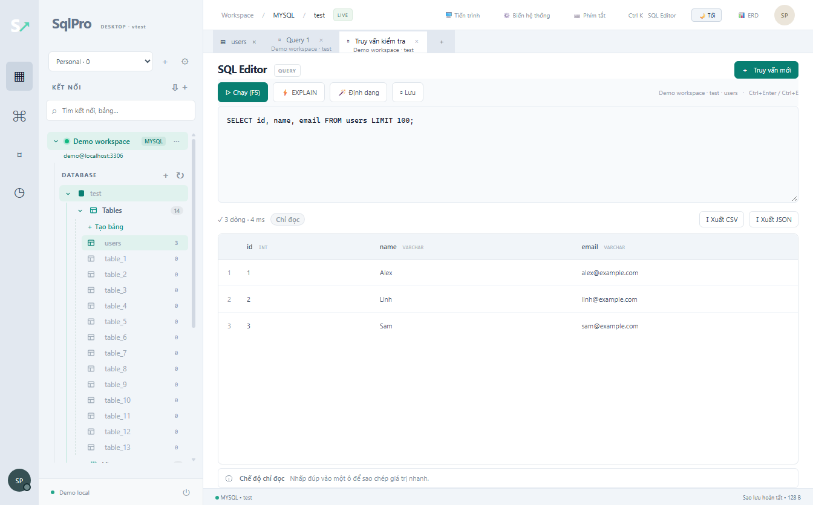
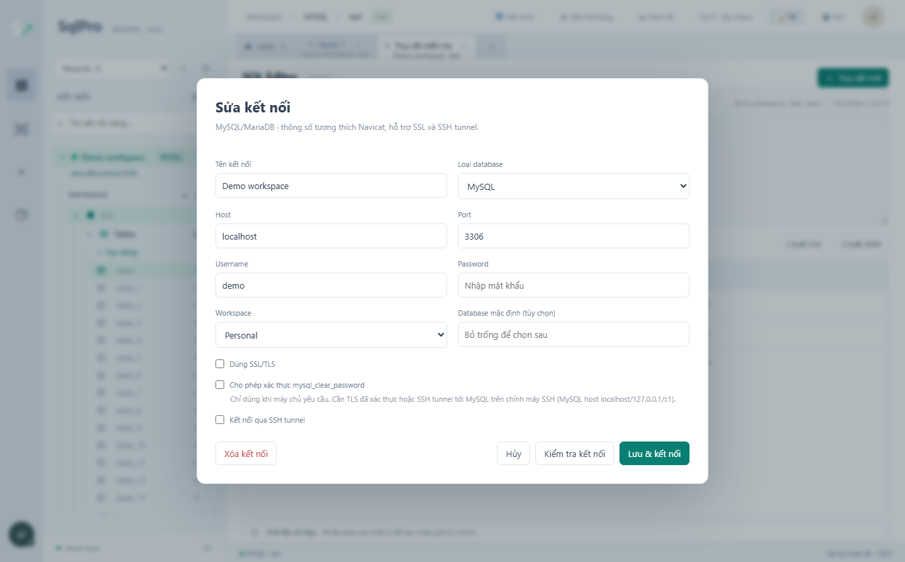
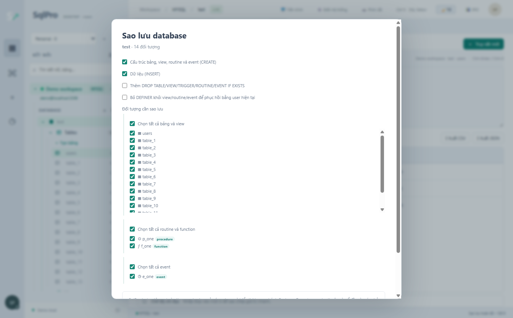

Connect your way
MySQL and MariaDB over TCP, SSL/TLS or SSH tunnels. Import Navicat .ncx and connections.json files.
Read the guide →Offline-first · MySQL & MariaDB
A desktop workspace for everyday database work. Connect, write SQL, make backups and continue on another computer with connections encrypted on your device.

Actual SqlPro desktop UI, shown in Vietnamese with demo data.
Inside SqlPro
Open an image at full size. Screenshots use sample data and contain no real credentials.


Features
MySQL and MariaDB over TCP, SSL/TLS or SSH tunnels. Import Navicat .ncx and connections.json files.
Read the guide →Multiple tabs, table/column suggestions, formatting, EXPLAIN and multiple result sets. Confirm potentially destructive operations.
Read the guide →Group connections by project or environment. Tabs retain context so you can continue working.
Read the guide →Connections and workspaces in an AES-256-GCM vault. Sign-in is optional; database contents are not synced.
Read the guide →Back up tables, views, triggers, procedures, functions and events. Restore SQL with DELIMITER support.
Read the guide →CSV, TSV and JSON with previews and column mapping. Follow progress and cancel tasks from the interface.
Read the guide →Sync on your terms
The server receives an auth proof and an encrypted vault. Account keys are derived locally with scrypt. Self-host the server or work offline without signing in.
Understand synchronization →Password recovery is not available. A forgotten password cannot decrypt the server vault; read the limitations before enabling sync.
Self-host
Choose localhost for a local trial, or HTTPS with Caddy for multiple devices. Configuration is generated in your browser.
Enable JavaScript to use the generator, or follow the self-hosting guide.
docker compose up -dSave the files in one directory, run the command and open the URL above. Append /healthz to check the server. Inspect status with docker compose ps and logs with docker compose logs --tail=100. Retain the sqlpro-data volume when upgrading.
Download SqlPro
Windows and Ubuntu/Linux x64. Version, file size, release date and SHA-256 come from GitHub when available.
Installation and checksum guide →Installers are published on GitHub Releases.
FAQ
Find step-by-step instructions and solutions for common error codes in the guides.
Troubleshooting and support →No. Database connections, the SQL editor, backups and import/export work offline. An account is only needed for sync.
Currently MySQL and MariaDB are supported. Other connection types are skipped during Navicat import.
Password recovery and recovery keys are not available. Without the password, the server vault cannot be decrypted; local data remains on your device.
Only paths are synced. Private-key and certificate files must exist on each device at the configured paths.
Windows: installer .exe or Portable. Ubuntu: .deb; AppImage is an alternative when supported by your environment. Desktop installers currently target x64.